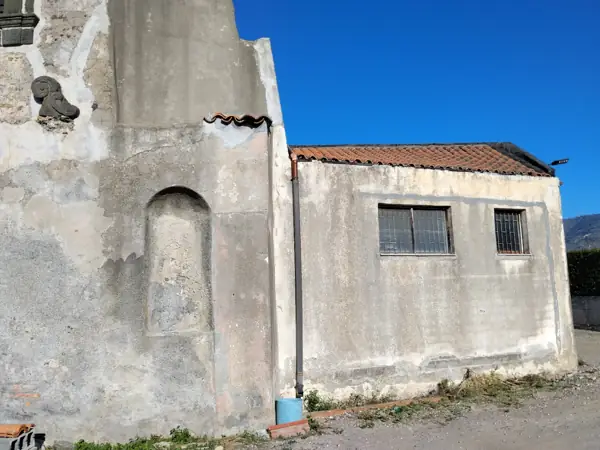
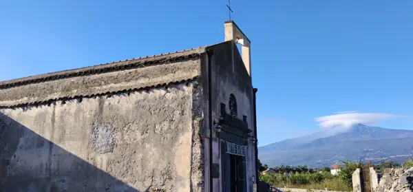
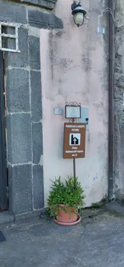
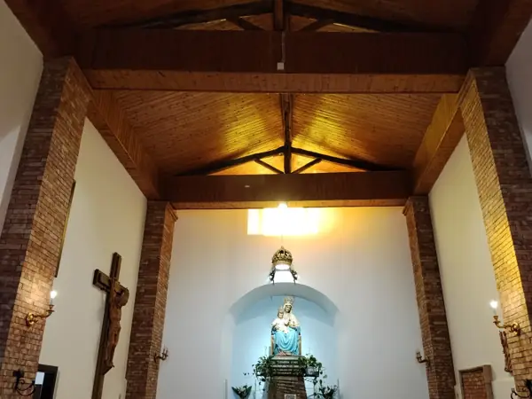
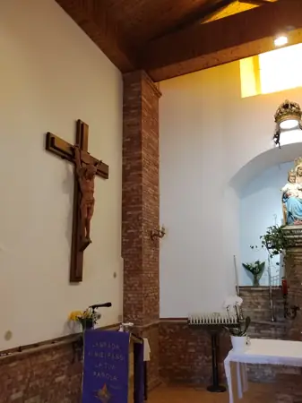
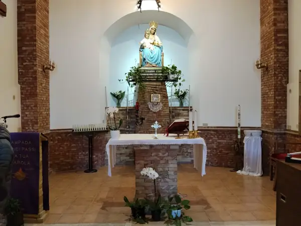
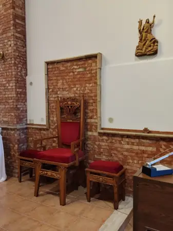
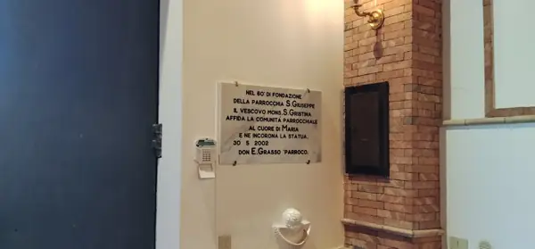

Archivio fotografico · Pasteria, Calatabiano
Madonna dell’Imperio: la chiesa nelle fotografie
Una documentazione del 22 novembre 2026 mostra la chiesa dall’esterno, il suo rapporto con il paesaggio, gli ambienti interni e alcuni oggetti di culto. Le immagini sono state realizzate da Michele Bottino grazie alla collaborazione di padre Alfio.
Le fotografie descrivono lo stato visibile dell’edificio alla data degli scatti. Non consentono, da sole, di attribuire epoche precise alle murature, agli arredi o alle opere.
Architettura esterna







Spazi interni e arredi








Lapidi e testimonianze


Crediti e approfondimenti
Fotografie © Michele Bottino, 22 novembre 2026. Documentazione realizzata grazie alla collaborazione di padre Alfio. Le immagini qui pubblicate sono copie web; i file di acquisizione conservati nell’archivio privato sono distinti dalle copie di consultazione.
Per la storia del monumento consulta la scheda della chiesa e il fascicolo delle fonti.